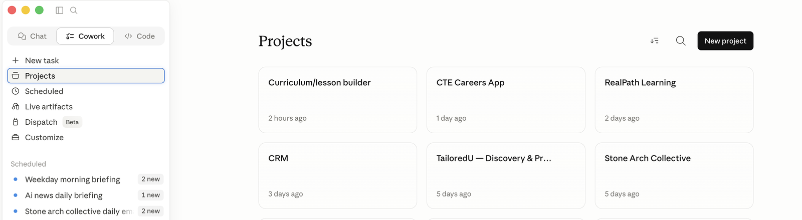
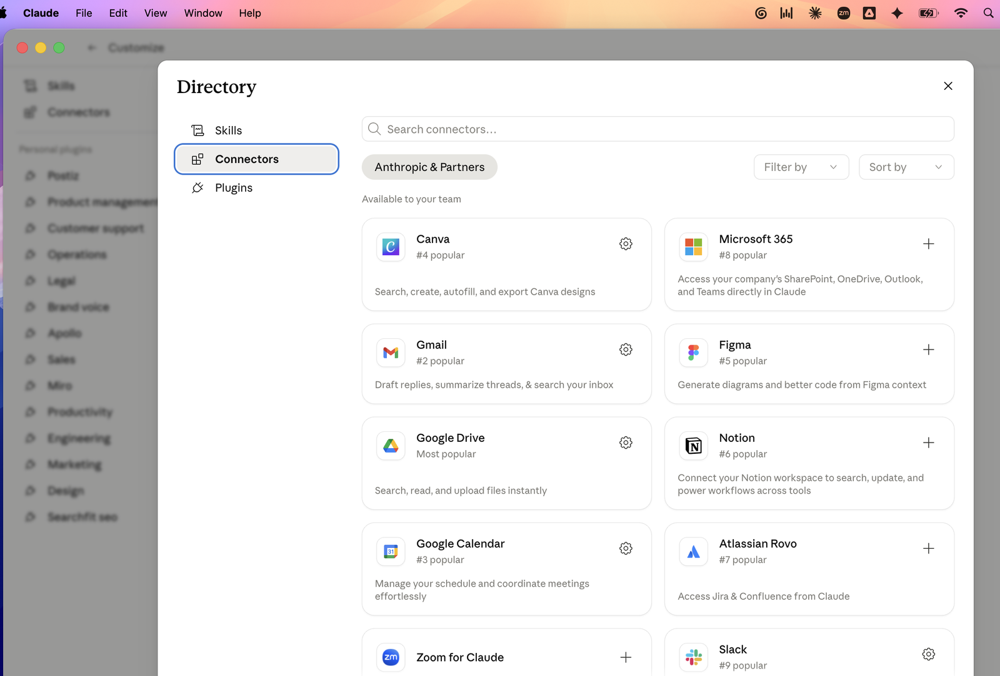
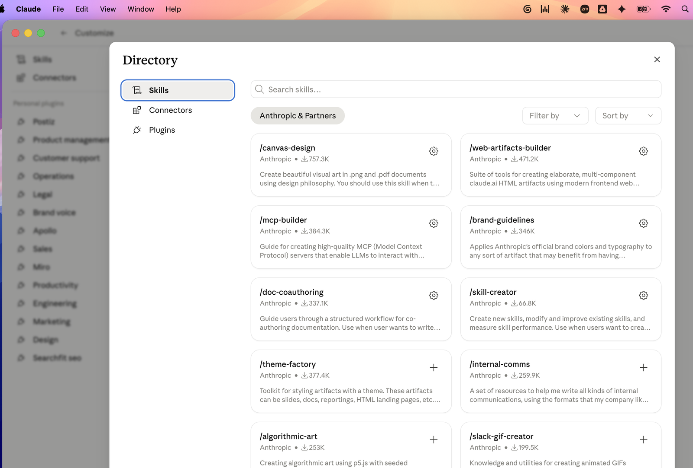
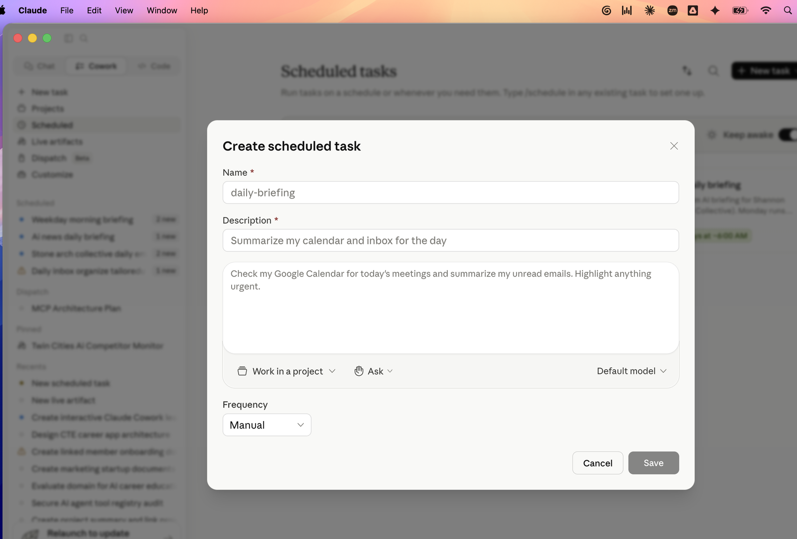
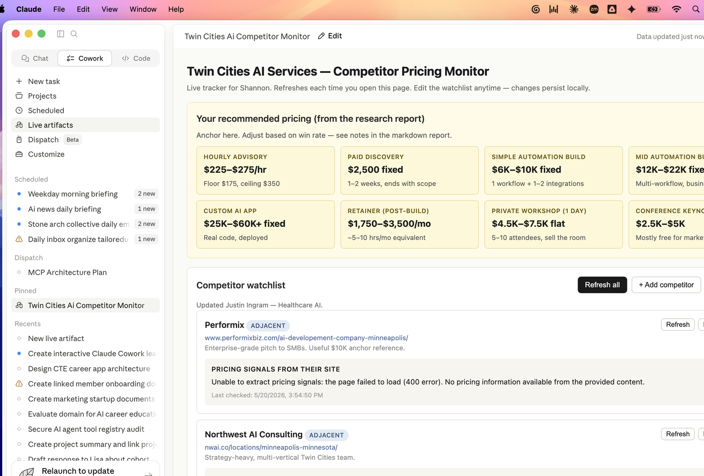
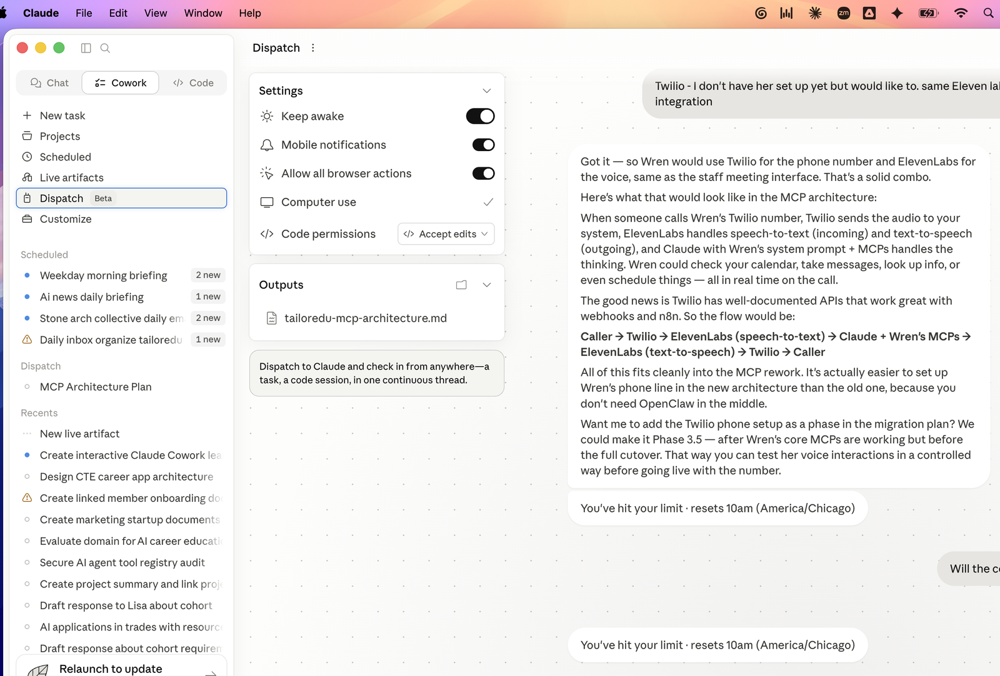

Tutorial walkthroughs.
Click any section to expand. Each tutorial has: what it is, when to reach for it, a step-by-step walkthrough, and copy-paste prompts.
Files & foldersRead, write, edit, and reorganize files in a folder you pick.
- 1Open Cowork and select a folder. Claude can now see what's in it.
- 2Ask a question about the contents ("what's in this folder?", "summarize the deck named Q2 launch").
- 3Ask for an output. Claude builds the file in your folder and gives you a link to open it.
- 4Iterate. "Make the executive summary tighter." "Add a chart for the regional breakdown."

Projects view. Each project is a folder Cowork can work in. Click one to set it as the active workspace for a conversation.
Run code in a sandboxA real Linux environment for Python, Node, and shell scripts.
- 1Hand Claude a file (CSV, JSON, log, anything) or describe a computation.
- 2Claude writes the script and runs it. You see the output (and the code, if you ask).
- 3Results get written back into your folder — a new spreadsheet, a chart image, a cleaned dataset.
Control your computerScreenshots, clicks, typing in native desktop apps.
- 1Ask Claude to do something on your desktop. It will request permission for the apps it needs.
- 2Approve each app explicitly. Some apps get restricted tiers (browsers and IDEs are visible but read-only or click-only by default — for safety).
- 3Claude takes screenshots to look at your screen, then clicks and types. You can watch it work.
- 4You can interrupt anytime by moving the mouse or telling it to stop.
Drive your browserNavigate, fill forms, extract page content via Claude in Chrome.
- 1Install the Claude in Chrome extension (Claude will prompt you the first time).
- 2Ask Claude to do something in a browser. It will open or use an existing tab.
- 3It reads the page, clicks the right elements, fills inputs, and reports back what it did.
Connect your apps (MCP)Gmail, Slack, Notion, Linear, Figma, Drive — 30+ connectors.
- 1Ask Claude what connectors are available, or directly ask it to connect a specific tool.
- 2Claude opens an OAuth approval page in your browser. Confirm.
- 3That connector now persists across sessions. Claude can use it any time.
- 4To revoke, ask Claude to disconnect it (or do it from the connectors panel).

The Connectors directory. Each tile is a service you can connect via OAuth — one approval flow per connector, takes about a minute.
SkillsPre-built playbooks for specific kinds of work.
- 1You don't have to memorize skill names. Phrase the ask naturally — "write a PRD for X", "review this contract" — and Claude picks the right skill automatically.
- 2The skill kicks in and asks any clarifying questions it needs.
- 3You get a structured deliverable — PRD, brief, audit report, etc. — formatted the way that kind of doc is supposed to look.
- 4If you want to see what's installed, ask: "what skills do I have?"

The Skills directory. Each tile is an individual skill you can install standalone — outside any plugin bundle.
PluginsInstallable bundles of skills and connectors, often role-matched.
- 1Ask Claude what plugins are available, or pick one by role (Sales, Marketing, Engineering, Legal, Ops, etc.).
- 2Install. Skills and connector options appear.
- 3Connect the tools the plugin uses. You're now set up for that workflow.
Persistent memoryRemembers facts about you across sessions — preferences, projects, feedback.
- 1Just work with Claude. As you go, it quietly notes things — your role, your projects, preferences you've stated.
- 2Next session, it already knows the context. No re-onboarding.
- 3Be explicit when something matters: "remember that I prefer terse responses with no trailing summaries."
- 4Audit any time: "what do you remember about me?" or "show me your memory file for project X."
Scheduled tasksRun on a cadence — daily briefings, weekly digests, future reminders.
- 1Tell Claude the cadence in natural language: "every morning", "each Monday at 9am", "in an hour".
- 2Tell it what to do when the task fires.
- 3Claude creates the schedule. You'll see it run in Cowork at the appointed time.
- 4List, edit, or remove schedules anytime.

The Create scheduled task modal. Name + description + the prompt body + a frequency (Manual, recurring cron, or one-time future fire).
Live artifactsHTML pages that persist and refresh data each time you open them.
- 1Ask Claude something that turns into a list, table, or dashboard.
- 2If it'll be useful later, ask: "turn this into a live artifact I can re-open."
- 3Claude builds the HTML page. It shows up in your artifacts list and is sharable.
- 4Reopen any time — the page calls your connectors and shows the latest data.

A real live artifact: a competitor pricing monitor that pulls fresh data from each competitor's site every time the page is opened. The user owns the watchlist; the data updates itself.
Inline visualizationsDiagrams, charts, mockups, interactive widgets right in chat.
Dispatch BetaLong-running tasks Cowork works on in the background while you do other things.
- 1Click Dispatch in the Cowork sidebar (currently marked Beta).
- 2Describe the task in plain language. The right side has a Settings panel where you toggle Keep awake, Mobile notifications, Allow all browser actions, Computer use, and Code permissions.
- 3Hit send. Cowork starts the dispatch as a persistent thread that survives across sessions.
- 4Check in anytime — from another conversation, another device. Outputs the dispatch produces (markdown docs, files, summaries) get linked in the Outputs panel.

A Dispatch in flight. Left: settings and outputs. Right: the ongoing conversation thread, which can pick up days later from any device.